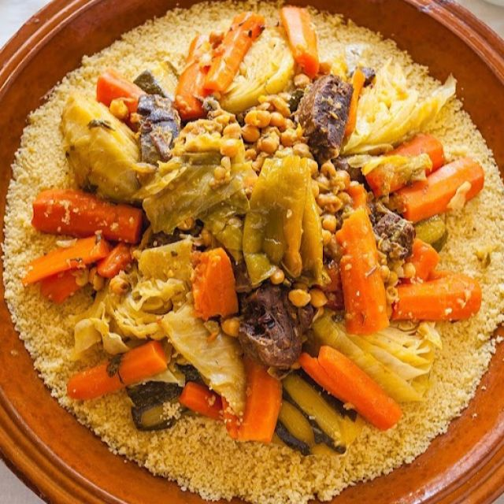

Couscous är en Nordafrikansk rätt som kan tillagas på många olika vis. Det finns bland annat couscous med fisk, kyckling, kött eller med bara grönsaker. De flesta grönsaker funkar alldeles utmärkt att tillsättas i grytan och man kan variera kryddningen efter smak. Fantastiskt god och delikat rätt som är full med smaker.
